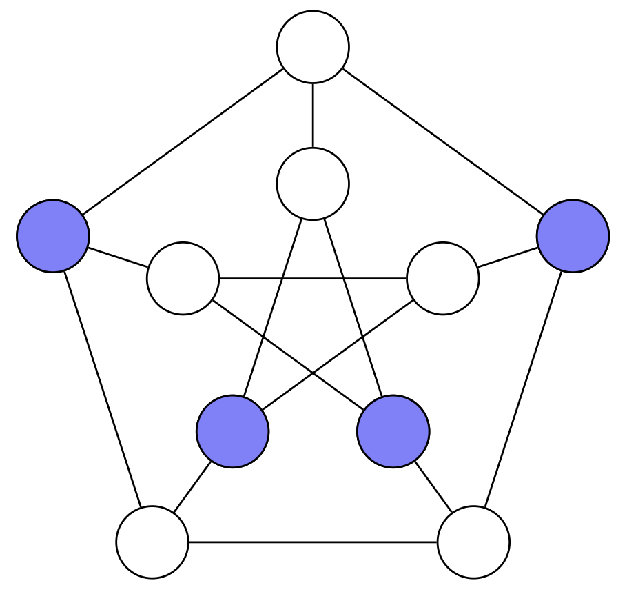
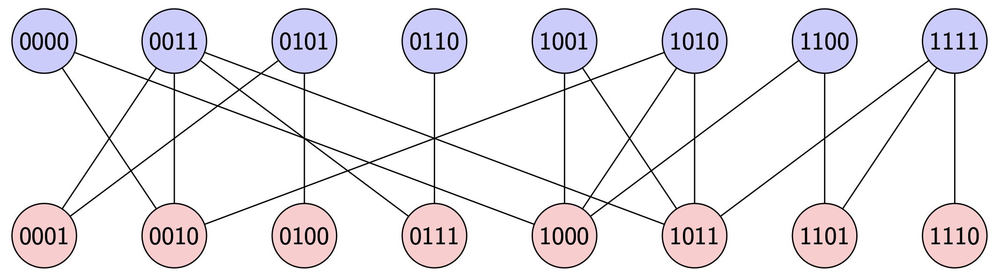
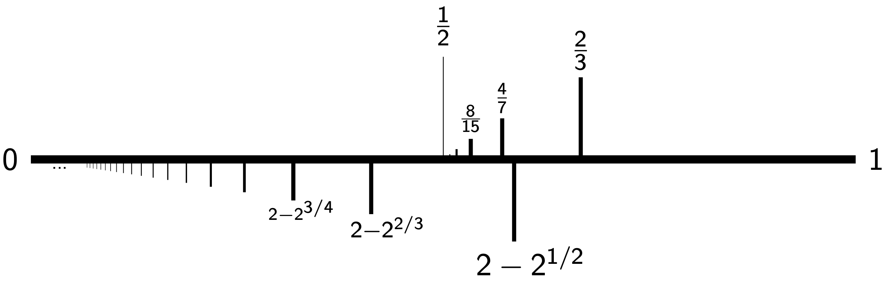

Independent sets are sets of vertices in a graph which contain no neighbors.
They are ubiquitous in computer science and statistical mechanics, as many questions can be rephrased in terms of independent sets in appropriate graphs;
moreover calculating the number of independent sets in an arbitrary graph is an NP-complete problem.
In joint work with Mriganka Basu Roy Chowdhury and Shirshendu Ganguly,
we investigated the number of independent sets in a random subgraph of the Boolean hypercube obtained by performing percolation with parameter \(p\) (which is the
probability that an edge is retained, not deleted),
and characterized its distribution for a wide range of values of \(p\).
We denote the \(p\)-percolated \(d\)-dimensional hypercube by \(Q_{d,p}\), and the number of independent sets in this graph by \(i(Q_{d,p})\).


Left: the blue vertices of the Petersen graph form an independent set.
Right: a sample of \(Q_{4,\frac{2}{3}}\).
Note that this graph is bipartite with an even side and an odd side; the parity here refers to the number of \(1\)s in the bit string corresponding to a vertex.
In our first paper in this area, we develop a novel probabilistic technique to study the distribution of \(i(Q_{d,p})\).
For any fixed \(p > 0\), a typical independent set in \(Q_{d,p}\) will be contained mostly in the even or odd side, but will have many defect vertices in the opposite side.
We can study these defects using polymer models, which are a useful tool from statistical mechanics.
The use of polymer models for this problem was first done in the \(p=1\) case by Jenssen and Perkins, and was adapted to an annealed version of the general case by Kronenberg and Spinka.
We construct a new random polymer model that allows us to understand the quenched behavior of this model in a much more intricate way.
This leads to a central limit theorem for \(i(Q_{d,p})\) when \(p > \frac{2}{3}\), resolving a question asked by Kronenberg and Spinka, and we also obtain a lognormal limit at \(p = \frac{2}{3}\), which is
a critical value at which this model undergoes a concentration–anticoncentration phase transition.
In our second paper in this area, we extend our techniques below \(p = \frac{2}{3}\), and cover all values of \(p > 0.465\); notably, this is strictly less than \(p = \frac{1}{2}\), a value which is of much interest
in \(Q_{d,p}\) as it is a point of phase transition for many other features of this random graph.
We find that in fact there is no real substantial phase transition for \(i(Q_{d,p})\) at \(p = \frac{1}{2}\), although there is a more subtle way in which the formulas involved in our theorem must change at this value.
In order to extend our analysis, we need to consider cases where the defects behave in more complicated ways, with an intricate clustering structure appearing at \(p = 2 - \sqrt{2} \approx 0.586\) and below.
In this regime, the defects form either monomers or dimers (size-two polymers), and the regime which we cover (down to approximately \(0.465\)) is exactly the regime of parameters
for which these two classes of defects can be shown to be roughly independent of one another.

A phase diagram for independent sets in \(Q_{d,p}\).
The numbers on the bottom indicate \(p\)-values below which more intricate types of polymers appear: dimers appear below \(2 - 2^{1/2}\), trimers appear below \(2 - 2^{2/3}\), et cetera.
On the top, we see a sequence of phase transitions beginning, on the right at \(p = \frac{2}{3}\), with the concentration-anticoncentration transition; the others are higher-order analogs of this transition which only affect
the formulas describing the model, not its overall probabilistic behavior.